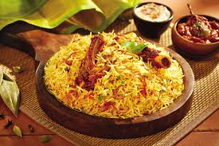
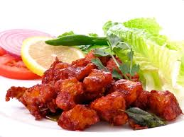
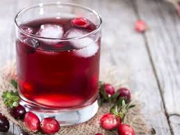

| Name |
Description |
Image |
| Biriyani |
Biryani is an Indo-Aryan word derived from the Persian language, which was used as an official language in different
parts of medieval India by various Islamic dynasties.One theory states that it originated from birinj, the Persian word for rice.
The word birinj, a middle Persian word, was ultimately derived from vrihi one of the Sanskrit words for rice. Another theory states
that it is derived from biryan or beriyan, which means "to fry" or "to roas |
 |
| Chicken 65 |
Chicken 65 is a spicy, deep-fried chicken dish originating from Hotel Buhari, Chennai, India, as an entrée, or quick snack.
The flavour of the dish can be attributed to red chillies, but the exact set of ingredients for the recipe can vary. |
 |
| Juice |
Juice is a drink made from the extraction or pressing of the natural liquid contained in fruit and vegetables. It can also
refer to liquids that are flavored with concentrate or other biological food sources, such as meat or seafood, such as clam juice. |
 |
| Gobi 65 |
Gobi 65 is a delectable cauliflower-based variant of Chicken 65, the Indian equivalent to Buffalo Wings,
from Chennai. Like many Indian dishes, there are several colorful stories about where the “65” comes.
Whether you believe it was invented in 1965, got its name from the number of chiles in the dish, or believe that “65”
was the menu number for the original dish, one thing everyone can agree on is that it goes great with an ice cold beer.
|
 |